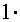
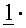
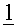
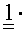
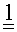
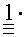
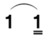
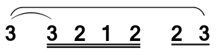

个人乐理自学笔记
本节内容参考自三分钟音乐社 《零基础学音乐·自学乐理第二季》 39-59节
简谱
调号
见乐理笔记01-基础知识
拍号
拍号的表示方式为\(\frac X
Y\)，读作YX拍，意思是以Y分音符的时长为一拍，每小节有X拍。
最常见的拍号是44拍，即以4分音符的时长为一拍，每小节有4拍。此外可以见到的拍号有42拍、43拍、83拍、86拍，其他拍号极其罕见。
拍号的强弱关系
无论什么拍号，每小节第一拍均为强拍，且每小节只有这一个强拍。
强拍的音量不一定响，弱拍的音量不一定弱。
旋律中的长音符，稳定音，通常处于强拍；短音符，不稳定音，通常处于弱拍。
和声通常要在强拍进行变化，弱拍进行保持。
不同的强弱关系还影响旋律的动机，织体的写法，配器的选择，速度的选择等等。
单拍子
每小节只有一个强拍，并且存在弱拍。
42拍——动次；43拍——动次次；83拍——动次次。
复拍子
由相同的单拍子组合而成。
44拍——动次打次；86拍——动次次打次次。
44拍由两个42拍组合而成，由多个拍号组合而成的拍号，每小节第一个拍子之外的强拍均要变成次强拍。因此这里的第二个42拍的强拍变成了次强拍，其强度弱于强拍。86拍同理，第二个83拍的强拍也变成了次强拍。
混合拍子
由不同的单拍子组合而成。
45拍——动次打次次（或动次次打次）。
45拍的组合顺序有两种：“42拍+43拍”或“43拍+42拍”，因此次强拍的位置有两种可能。
一拍子
每小节只有一拍，且这一拍是强拍。即拍号的分子是1被称为一拍子。
同理，拍号分子为X被称为X拍子。如43拍、83拍可称为三拍子。
散拍子
符号为“艹”。散拍子没有固定小节线，没有固定拍数，没有固定强弱关系，一般用于戏曲音乐中。
情绪与速度
情绪即演奏(唱)时的情绪，常见的情绪有欢快地、愉悦地、柔和地、抒情地、激昂地、悲伤地等。速度即演奏速度，包括具体的速度和抽象的速度两种。
具体的速度指的是BPM(Beats Per Minute)，即每分钟有多少拍。如BPM为120时可表示为“每分钟120拍”或“𝅘𝅥=120”或“120 BPM”。
抽象的速度是词语式的表达，是一个大致范围，有上下浮动的空间。如BPM在60以下称为慢速，60到120称为中速，120到180称为快速，180以上称为急速。
| 意大利文 | 中文 | BPM |
|---|---|---|
| Grave | 庄板 | 约40 |
| Largo | 广板 | 约46 |
| Lento | 慢板 | 约52 |
| Adagio | 柔板 | 约56 |
| Larghetto | 小广板 | 约60 |
| Andante | 行板 | 约66 |
| Andantino | 小行板 | 约69 |
| Moderato | 中板 | 约88 |
| Allegretto | 小快板 | 约108 |
| Allegro | 快板 | 约132 |
| Presto | 急板 | 约184 |
| Prestissimo | 最急板 | 约208 |
音符
音符时长取决于拍号的分母。以44拍为例，44拍以四分音符的时长为1拍。那么对应二分音符的时长是2拍，全音符时长为4拍。
附点音符时长为原音符的1.5倍。
复附点音符，两个附点的时长为原音符的1.75倍，三个附点的时长为原音符的1.875倍，以此类推。
| 名称 | 记法 | 时长 | |
|---|---|---|---|
| 全音符 | \(1---\) | 四拍 | █ █ █ █ |
| 附点二分音符 | \(1--\) | 三拍 | █ █ █ |
| 二分音符 | \(1-\) | 二拍 | █ █ |
| 附点四分音符 |  | 一点五拍 | █ ▌ |
| 四分音符 | \(1\) | 一拍 | █ |
| 附点八分音符 |  | 四分之三拍 | ▌▎ |
| 八分音符 |  | 半拍 | ▌ |
| 附点十六分音符 |  | 八分之三拍 | ▎▏ |
| 十六分音符 |  | 四分之一拍 | ▎ |
| 附点三十二分音符 |  | 十六分之三拍 | ▏| |
| 三十二分音符 | 八分之一拍 | ▏ |
小节
小节使用小节线“|”隔开，小节的时长取决于拍号。以44拍为例，四分音符为一拍，每小节四拍，那么每个小节的时长为四个四分音符的长度，即一个全音符长度。
小节序号
用来标明是第几个小节，最主要的作用是方便查找。小节序号通常标在小节线的正上方或稍微偏右。
弱起小节
不从强拍开始的不完整的小节，常用在乐曲开头。
小节序号从第一个完整小节开始计算，因此弱起小节不是乐曲的第一个小节。
终止线
终止线为“𝄂”，意味着乐谱的终止。
延音线
延音线可以用于表示一个时长无法通过音符或附点音符表示的音。亦用于某个音跨越小节线的情况。
如要表示一个时长为1.25拍的音，可以用延音线表示为，即四分音符与十六分音符的组合，加起来的时长为1.25拍。这里只有第一个音符发出声音，第二个音符不重新发音，仅为前面的音补充时长。
延音线的两个音必须为同一个音。
连线
乐谱中需要连贯演奏(唱)的地方使用连线进行连接，某一个字对应几个音时也会使用连线连接。
连线的画法与延音线相同，但通常情况下会连几个不同的音。
举一个例子。这里最外侧从第一个音连至最后一个音的线为连线。内侧连接同一个音的线为延音线。
休止符
表示停顿，符号为0，停顿时长与音符时长的表示方法类似。
音符下方横线
通常情况下将处于同一拍的音符下方的横线连接起来，方便计算拍数。如，这里连起来的部分的拍数之和都是一拍。
断开的部分不存在停顿，横线的断开与小节线的分割均不表示停顿，都需要连续演奏。